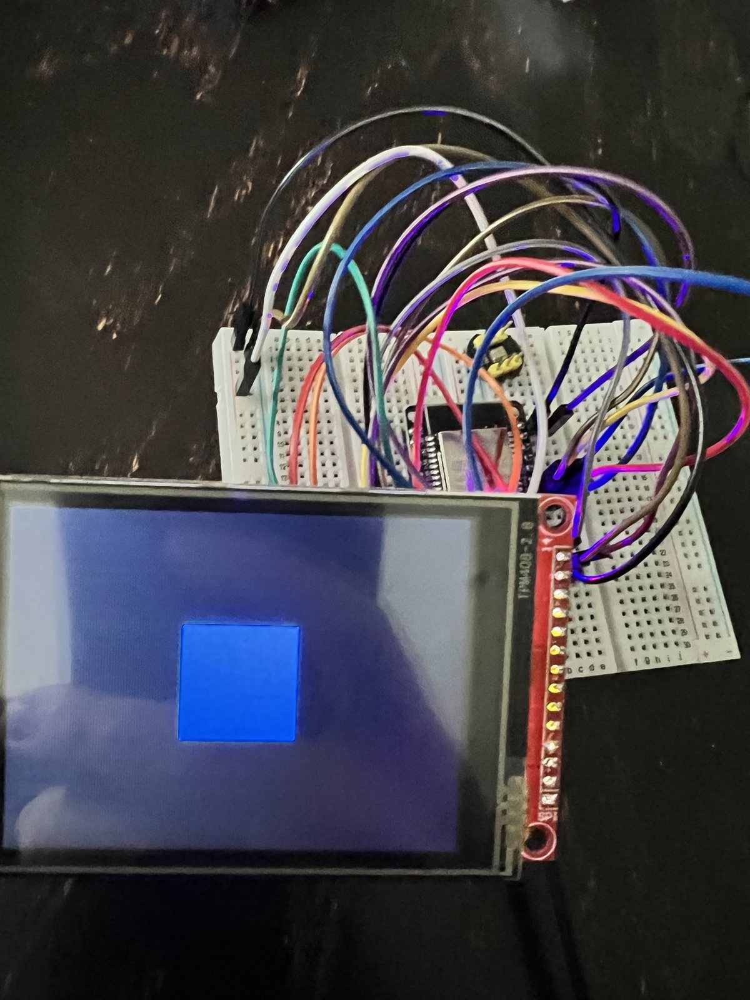
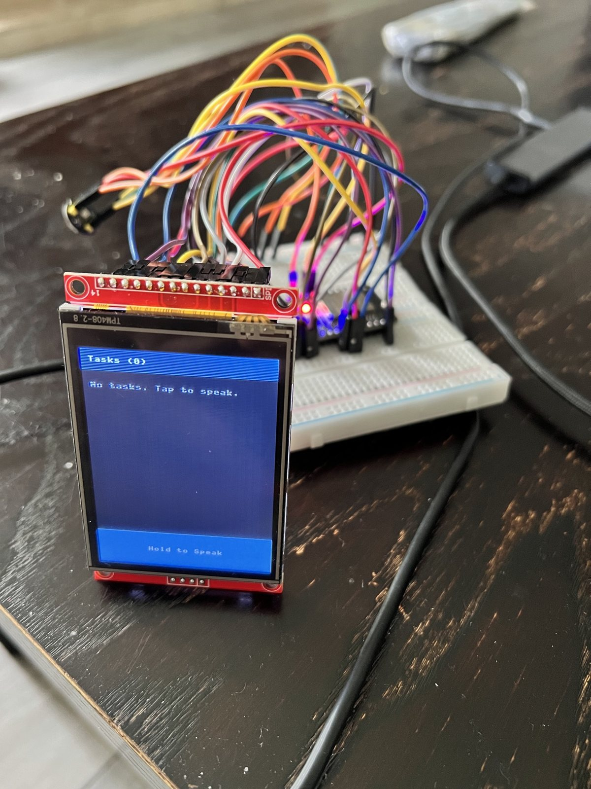
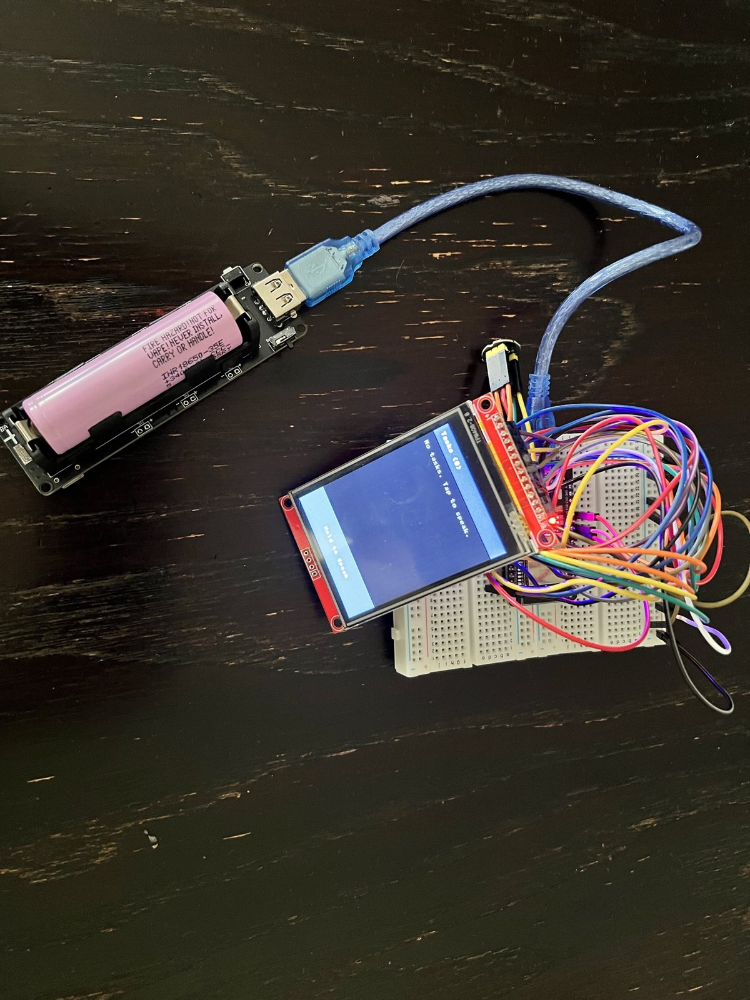

Automated task management system
A desk device you hold and talk to. It records what you say, sends the audio to a server that transcribes it with Whisper and runs it through a language model, then shows the task on its own screen, all running off a single lithium cell.
Why build it
Every task app I used had the same problem: unlocking a phone and finding the right screen took longer than I could remember the task. So I built a single-purpose object that does one thing — hold it, speak, and the task appears.
“Speak, and the task is on the screen — no phone, no app, no typing.”
The hard part is that four systems have to talk to each other. An I2S microphone puts out a continuous 16 kHz audio stream. An ESP32 has to buffer that stream and push it over Wi-Fi without freezing the display it is also driving over SPI. A server has to catch the raw audio, transcribe it, and get a language model to figure out what the task actually is. Then the result has to land back on a 2.8-inch screen fast enough to feel instant.
Because the microcontroller is capturing audio and driving the display at the same time, the real work was timing and buffering: keeping the audio pipeline fed while the touch controller and screen stayed responsive.
Build log
1. Prove the screen before anything else
Nothing else can be debugged until you can see something. The first milestone was getting the ILI9341 display running over SPI: wiring the control lines, sorting out the chip-select and reset pins, and drawing a single filled rectangle.
A blue square is a deliberately boring target, and that is the point. It confirms the SPI bus, the pin mapping, the supply rail and the display’s initialization sequence all at once. Once the rectangle rendered, every later bug had a known-good foundation underneath it.

2. A real interface, and a microphone behind it
With the screen working, the square became an actual interface: a header that shows the live task count, an empty state, and a full-width hold-to-speak button. Touch comes from an XPT2046 resistive controller that shares the SPI bus with the display, so the two have to take turns rather than talk over each other.
Behind the screen, the INMP441 microphone streams 32-bit samples at 16 kHz over I2S. Holding the button opens a capture window and starts filling a buffer; releasing it closes the window and sends the buffer over the network. This is where latency either works or doesn’t — the buffer has to drain to Wi-Fi at least as fast as the microphone fills it, or the audio breaks up.

3. Off the bench supply, onto a cell
A device you pick up can’t be tied to a laptop. Power moved to a Samsung 35E 18650 cell (3500 mAh, flat-top) on an 18650 charge shield that regulates the 5 V and 3.3 V rails and allows pass-through charging.
The requirement that decided the part was no auto-shutoff. Most cheap power banks cut their output when the current draw drops below a threshold, which would kill an idle device sitting on a desk waiting to be spoken to. A shield with UPS-style pass-through keeps the ESP32 alive while charging and holds it up through the current spike when the Wi-Fi radio transmits.

Signal path
The device itself stays simple. It captures and displays; the interpretation happens off-board. That split keeps the ESP32 doing what it is good at — real-time input and output — and puts the heavier work on a laptop where there is enough memory for it.
One spoken task makes a single round trip: microphone to ESP32, ESP32 to the FastAPI server over Wi-Fi, through Whisper and the language model, and back to the screen as a line of text.
Components
Each part was picked for a reason. Grouped by what it does:
- Core
- ESP32 development board. Holds the Wi-Fi link, routes power, and manages the inputs and outputs.
- Interface
- ILI9341 2.8-inch TFT. SPI color display for the task list, empty state and record button.
- XPT2046 touch controller. Resistive touch layer over the panel, sharing the SPI bus with the display.
- Audio
- INMP441 digital microphone. Omnidirectional I2S mic streaming 16 kHz, 32-bit samples. Digital output means there is no analog front end to design.
- Power
- 18650 charge shield V3. Regulates 5 V and 3.3 V, with pass-through charging and no auto-shutoff, so an idle device stays awake.
- Samsung 35E 18650 cell. 3500 mAh flat-top lithium-ion, with headroom for the Wi-Fi transmit spikes.
- Prototyping
- Solderless breadboard and jumper wires. The base for the build while the pin map was still changing.
- Off the device
- Python and FastAPI server. A local endpoint on my laptop that catches the raw audio from the device.
- Whisper and a language model. Speech to text, then a model that reads the transcript and pulls out the actual task.
Enclosure
The electronics work, but a loose breadboard isn’t a product. I modeled the enclosure in Fusion 360 as a two-part clamshell: the display and touch panel mount in the lid, and every board, jumper and the battery live underneath, out of sight.
The lid is on a hinge rather than screws, so the inside stays reachable — the wiring is still changing, and a case you have to wreck to open is a case you stop opening. The cutouts are sized to the bare board rather than the module, the cable path clears the hinge swing, and there is room to swap the 18650 without pulling the wiring apart.
Placeholder Fusion 360 screenshot of the enclosure, lid open. To be added as assets/task-manager/cad-enclosure.jpg